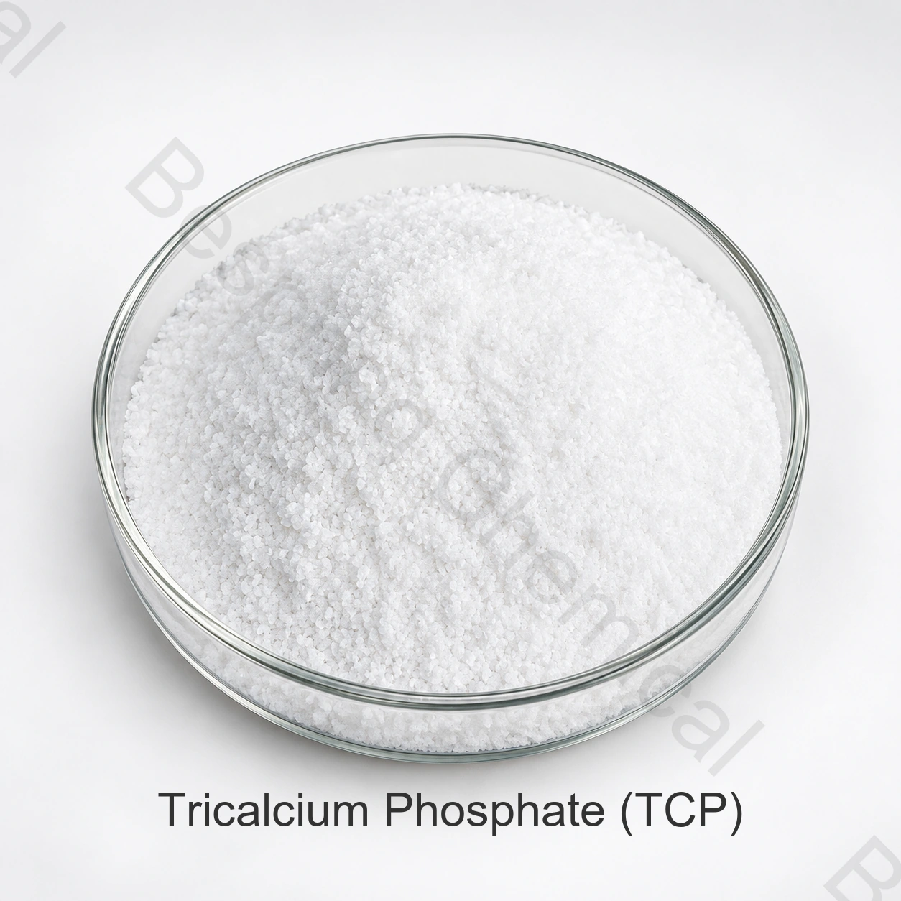

Hỗ trợ hút và khô
Ông JECFA công nhận tricalcium phosphate là một chất thu âm, có thể giúp duy trì sự lưu thông trong các thức ăn khô và các hợp chất.
- Quản lý dòng chảy khô
- Điều khiển xe đạp có liên quan đến Moisiture
- Kiểm tra tương thích premix
Phosphat cấp thực phẩm · Muối canxi · INS 341(iii)
Tricalcium phosphate là một loại canxi không thể pha loãng được sử dụng trong hệ thống thực phẩm được chọn để làm cho các hoạt động tích tụ, đệm, ổn định và các mục đích khai thác khoáng chất.

Ảnh sản xuất # xác nhận cấp và bao bì khi đặt thứ tự
Bao gồm ứng dụng thực phẩm, đặc điểm mục tiêu, số lượng, đích và tài liệu cần thiết.
Nội dung tham khảoNội dung TCP là90.0%
Thu dọn chuẩn25kg
CommentTham khảo: 22 MT / 20' FCL
Điều kiệnChứng nhận COA và ứng dụng khi yêu cầu
Tổng quát sản phẩm
Thực phẩm cấp ba phusphite (TCP), cũng được gọi là canxi phosphate tribasicic hoặc tricalcium orthophophate, được xác định là INS 341(iiii). Danh tính thương mại là CAS 7758-87-4 và công thức Ca3(PO4)2.
JECFA mô tả thực phẩm thương mại được thêm vào như là một biến số của canxi Phosphates với ít nhất là 90% ca3(PO4)2 Do đó, người mua nên hội đủ tiêu chuẩn được đề nghị chống lại tiêu chuẩn đã định, phương pháp thử nghiệm và ứng dụng thay vì chỉ dựa vào tên ngắn.
Chức năng
TCP thực tế không thể hòa tan trong nước, do đó phân tán, kích thước hạt và sự hình thành hoàn chỉnh có thể ảnh hưởng đến hiệu suất vật chất.
Ông JECFA công nhận tricalcium phosphate là một chất thu âm, có thể giúp duy trì sự lưu thông trong các thức ăn khô và các hợp chất.
JECFA còn liệt kê chức năng đệm. Mục tiêu khác gồm điều chỉnh độ axit, ổn định, bổ sung canxi và dưỡng chất nấm men, tùy thẩm định hệ thực phẩm và thị trường.
Kiểm tra thực phẩm ứng dụng
Quyền pháp lý và mức độ sử dụng khác nhau tùy theo loại thức ăn và điểm đến. Kiểm tra lại điểm chính xác trong việc hình thành xong.
Đánh giá khả năng hút thuốc, lưu thông, phân tán và tác dụng cảm giác trong mùa màng, tiền liệt và các hệ thống khô khác.
Có thể cung cấp canxi và phốt pho trong thực phẩm thích hợp, phụ kiện và tiền tiêu sau khi xem xét về dinh dưỡng và quy chế.
Có thể hỗ trợ cho việc đệm các mục tiêu nơi mà sự tương tác giữa nước và khoáng chất thấp phù hợp với cách hình thành.
Kích thước hạt màn hình, hành vi đình chỉ, kết cấu và ổn định lưu trữ trong ma trận thức ăn hoàn chỉnh.
Có thể được đánh giá trong hệ thống lò bánh khô cho việc lưu thông, làm giàu khoáng sản và các chức năng xử lý đặc trưng.
Hãy đánh giá sự sẵn có dinh dưỡng, liều lượng và quá trình đáp ứng trong một hệ thống men thích hợp.
Đặc điểm thương mại
Giới hạn thương mại tham khảo này tách biệt COA lô và yêu cầu quy định. Thỏa thuận cấp, cơ sở phân tích và phương pháp trong tiêu chuẩn có chữ ký.
Vuốt hoặc dùng bàn phím để đọc tất cả các cột
| Mục thử ra | Đơn vị | Chi tiết |
|---|---|---|
| Diện mạo | — | Bột trắng, không mùi và không vị |
| Name | % | ≥90.0 |
| P2O5 Nội dung | % | 38.5–48 |
| Kiểm tra nhận diện | — | Phản ứng màu dương |
| Kiểm tra tính khả thi | — | Hầu như không thể hòa tan trong nước; không thể hòa tan trong chất kích thích; dễ hòa tan trong axit hydrochloric và axit nittic |
| Cacium (Ca) nội dung | % | 34.0–40.0 |
| Kim loại nặng (như Pb) | % | ≤0.0015 |
| Lỗi khi khởi động | % | ≤8.0 |
| Fluoride (F) | % | ≤0.050 |
| chì (Pb) | mg/kg | ≤4 |
| Cadmium | mg/kg | ≤1 |
| Thủy ngân (h) | mg/kg | ≤1 |
Giới hạn cụ thể: Đồng ý cho dù kết quả được báo cáo về một căn cứ, khô hoặc đốt cháy, và so sánh tất cả các giới hạn với tiêu chuẩn, hợp đồng và các quy tắc thị trường đích.
Hỗ trợ độ phân giải
Yêu cầu đặc tả/ TDS, SDS, phương pháp thử và đại diện hoặc chứng nhận phân tích hàng loạt hiện thời.
Yêu cầu ứng dụng HCCP, Kosher, Halal và ISO tài liệu và xác nhận sản phẩm, trang web, phạm vi, nhà xuất bản và thẩm quyền.
ôn lại FAO/ lương tâm JECFA tricalcium phosphate cho danh tính, giả thuyết và ngữ cảnh sử dụng chức năng.
Lưu trữ và xử lý
Hỏi người mua
TCP được đánh giá như một chất làm hoạt động và bộ đệm và, trong các sản phẩm thích hợp, cho sự ổn định, quy định axit, hồ bơi Canxi và các mục đích dinh dưỡng.
JECFA mô tả thương mại tricacium phosphate thực tế là không thể hòa tan trong nước và không thể pha trộn trong chất béo, trong khi có thể hòa tan trong axit hydrochloric và nictic. phân tán và kích cỡ hạt có thể ảnh hưởng đến ứng dụng thực phẩm.
TCP, DCP và MCP là các thành phần khác nhau của can-xi phosphate với tỷ lệ can-xi-tphopho, axit, chất lỏng và chức năng khác nhau.
Đặc điểm tham khảo thương mại liệt kê ít nhất 90.0% TCP. JECFA tương tự chỉ định không ít hơn 90% ca3(PO4)2 Tính toán dựa trên căn bản bị đốt cháy; xác nhận phương pháp hợp đồng.
Thông tin tham khảo: 25 kg mỗi bao, 22 tấn hệ mét mỗi container 20 feet và lượng đặt hàng tối thiểu 500 kg. Xác nhận chi tiết hiện hành về túi lót, pallet và tải xếp.
Cung cấp cho ứng dụng thực phẩm, tiêu chuẩn và cụ thể, nhu cầu kích thước hạt, số lượng, đóng gói, đích đến, tài liệu và ngày giao hàng.
Canxi liên quan đến Phosphates
INS 341(i), phosphat canxi có tính axit dùng trong một số hệ tạo nở và bổ sung khoáng.
INS 341(ii), có dạng khan và dihydrat cần thẩm định riêng.
Một loại thuốc giảm axit cho lò nướng đủ tiêu chuẩn và thực phẩm sẵn sàng.
Hướng dẫn ứng dụng liên quan: Cacium Phosphates để làm thành lũy mỏ.
Tìm nguồn dựa trên chỉ tiêu kỹ thuật
Hãy chia sẻ chi tiết cần thiết để xem xét các chi tiết kỹ thuật phù hợp, tài liệu và giao hàng.
Cho chúng tôi biết điểm số và điểm đến của anh để chúng tôi có thể xác nhận tài liệu nào có sẵn cho đơn đặt hàng của anh.
Một tham chiếu bên ngoài không phải là một chứng nhận hàng loạt hoặc một đặc điểm sản phẩm Bespring.